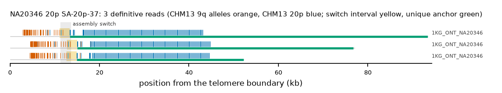

NA20346 20p: SA-20p-37
Claim NA20346|20p|SA-20p-37. All claims
- cohort
- 1000 Genomes ONT
- individual
- NA20346
- haplotype
- hap2
- arm
- 20p
- allele
- SA-20p-37 (foreign)
- model
- donor CHM13 9q, proximal CHM13 20p, recipient CHM13 20p, pattern DP
- claimed end(s)
NA20346#2#CM094272.1#L- assembly switch
- 10,292 bp from the telomere boundary; on CHM13 chr20:14544; own-window projection 11315-13613 bp
- v1 verdict
- confirmed (confirmed)
- definitive tier
- definitive
- reads
- 3 conclusive switch-concordant, 0 discordant, 2 contradicting, 1 consistent; 3 definitive (1KG_ONT_NA20346)
- by tier
- definitive:3;consistent:1;contradicts:2
- source
- https://ftp.1000genomes.ebi.ac.uk/vol1/ftp/data_collections/1KG_ONT_VIENNA/t2t/NA20346.t2t.cram
- note
- confirmed:robust; keep

Conclusive and contradicting reads (5)
1 further reads are consistent (switch test passed, but no terminal telomere, anchor or integrity); they are
listed in reads.tsv.gz. Switch: 95% interval in subtelomere coordinates (kb from the
telomere boundary) and projected on CHM13 20p. Each samtools command prints the read's record
from its public file (CRAM: add the CHM13 v2.0 FASTA as -T).
| read | dataset | tier | length | switch (subtelomere, kb) | switch on CHM13 | donor units / purity | proximal units / purity | anchor (CHM13, MAPQ, unique) | own-assembly best end | fetch |
|---|---|---|---|---|---|---|---|---|---|---|
a172e52c-d562-4368-a79f-aeed46f5aca8 | 1KG_ONT_NA20346 | definitive | 78,449 | 12.7-15.0 | chr20:12194-14486 | 49 / 0.98 | 145 / 0.99 | chr20:14492-76550, 60, 14.8 kb | NA20346#2#CM094272.1#L (96.5%) ✓ | samtoolssamtools view -F 0x900 -T chm13v2.0.fa.gz -X 'https://ftp.1000genomes.ebi.ac.uk/vol1/ftp/data_collections/1KG_ONT_VIENNA/t2t/NA20346.t2t.cram' 'https://ftp.1000genomes.ebi.ac.uk/vol1/ftp/data_collections/1KG_ONT_VIENNA/t2t/NA20346.t2t.cram.crai' 'chr20:1-5000' | awk -v r='a172e52c-d562-4368-a79f-aeed46f5aca8' '$1==r' |
50fd8d5a-9822-4b82-b51c-f729bf611d9d | 1KG_ONT_NA20346 | definitive | 58,902 | 12.6-14.9 | chr20:12214-14486 | 46 / 0.98 | 144 / 0.99 | chr20:14486-52136, 60, 8.2 kb | NA20346#2#CM094272.1#L (94.9%) ✓ | samtoolssamtools view -F 0x900 -T chm13v2.0.fa.gz -X 'https://ftp.1000genomes.ebi.ac.uk/vol1/ftp/data_collections/1KG_ONT_VIENNA/t2t/NA20346.t2t.cram' 'https://ftp.1000genomes.ebi.ac.uk/vol1/ftp/data_collections/1KG_ONT_VIENNA/t2t/NA20346.t2t.cram.crai' 'chr20:1-5000' | awk -v r='50fd8d5a-9822-4b82-b51c-f729bf611d9d' '$1==r' |
bccad9d4-d62b-407c-8991-f08680df9490 | 1KG_ONT_NA20346 | definitive | 94,055 | 11.1-13.4 | chr20:12192-14486 | 49 / 0.94 | 146 / 0.99 | chr20:14486-94759, 60, 14.8 kb | NA20346#2#CM094272.1#L (97.5%) ✓ | samtoolssamtools view -F 0x900 -T chm13v2.0.fa.gz -X 'https://ftp.1000genomes.ebi.ac.uk/vol1/ftp/data_collections/1KG_ONT_VIENNA/t2t/NA20346.t2t.cram' 'https://ftp.1000genomes.ebi.ac.uk/vol1/ftp/data_collections/1KG_ONT_VIENNA/t2t/NA20346.t2t.cram.crai' 'chr20:1-5000' | awk -v r='bccad9d4-d62b-407c-8991-f08680df9490' '$1==r' |
7d5e71ee-94b7-4758-9661-4824187c08e3 | 1KG_ONT_NA20346 | contradicts | 30,091 | 2.9-3.2 | chr20:3652-3946 | 1 / 0.00 | 107 / 0.97 | chr20:11127-27419, 60, 6.6 kb | samtoolssamtools view -F 0x900 -T chm13v2.0.fa.gz -X 'https://ftp.1000genomes.ebi.ac.uk/vol1/ftp/data_collections/1KG_ONT_VIENNA/t2t/NA20346.t2t.cram' 'https://ftp.1000genomes.ebi.ac.uk/vol1/ftp/data_collections/1KG_ONT_VIENNA/t2t/NA20346.t2t.cram.crai' 'chr20:1-5000' | awk -v r='7d5e71ee-94b7-4758-9661-4824187c08e3' '$1==r' | |
18b99125-f423-41d1-8a95-ba52e6d2087f | 1KG_ONT_NA20346 | contradicts | 33,906 | 2.9-3.2 | chr20:3650-3946 | 1 / 0.00 | 135 / 0.96 | chr20:11117-33634, 60, 6.7 kb | samtoolssamtools view -F 0x900 -T chm13v2.0.fa.gz -X 'https://ftp.1000genomes.ebi.ac.uk/vol1/ftp/data_collections/1KG_ONT_VIENNA/t2t/NA20346.t2t.cram' 'https://ftp.1000genomes.ebi.ac.uk/vol1/ftp/data_collections/1KG_ONT_VIENNA/t2t/NA20346.t2t.cram.crai' 'chr20:1-5000' | awk -v r='18b99125-f423-41d1-8a95-ba52e6d2087f' '$1==r' |
Files
CRAM/BAM on CHM13 v2.0, BAM on the person's own assembly windows and the window FASTA: release asset subtel_read_evidence_v1_1KG_ONT.tar.gz, directory read_evidence_v1/1KG_ONT/NA20346__20p__SA-20p-37/ (downloads).
Re-derive this verdict
git clone https://github.com/jlanej/human-subtelomere-atlas && cd human-subtelomere-atlas
evidence/replicate_claim.sh 'NA20346|20p|SA-20p-37'The script fetches the cited reads from the public source by region and read ID, re-runs the frozen criteria and compares every per-read and claim verdict with this page (details).